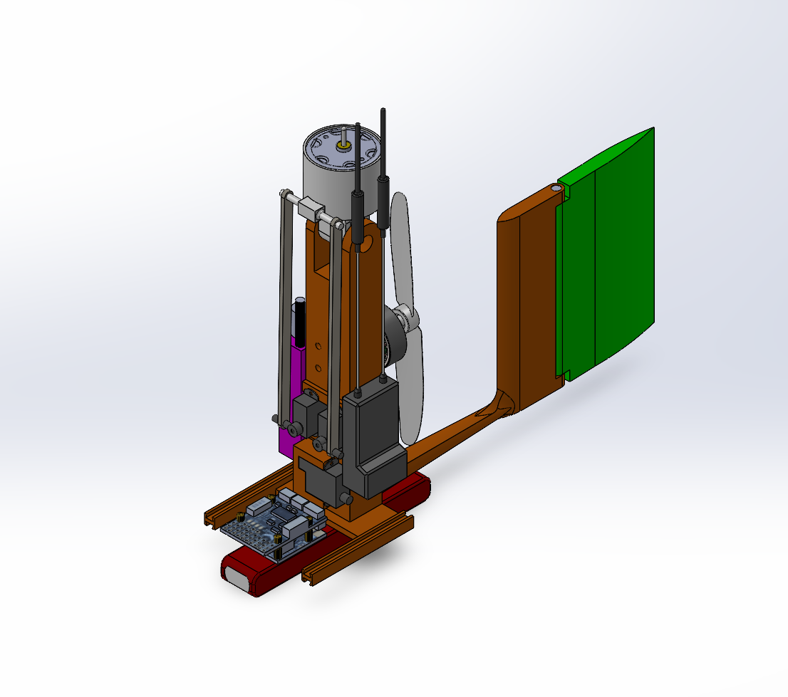
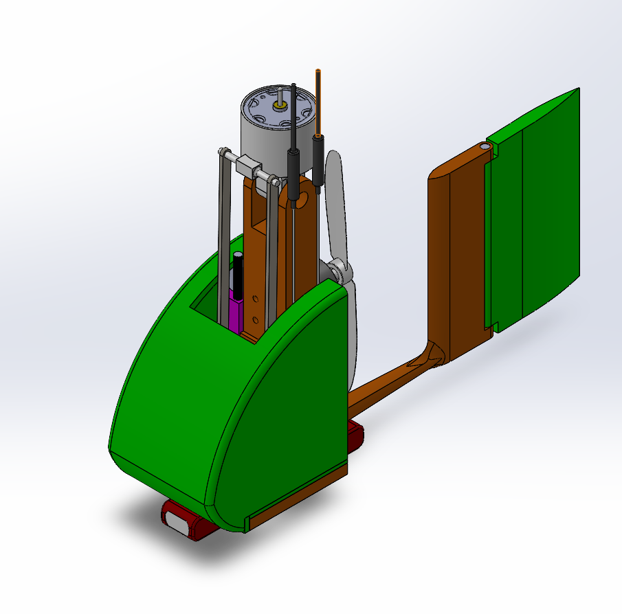
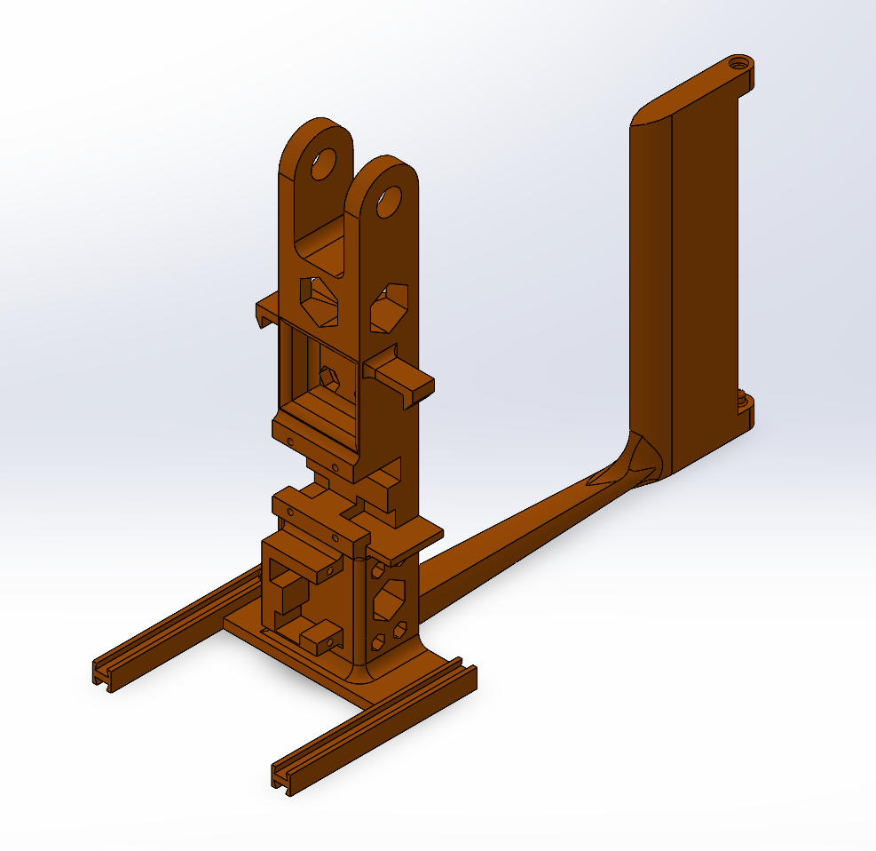
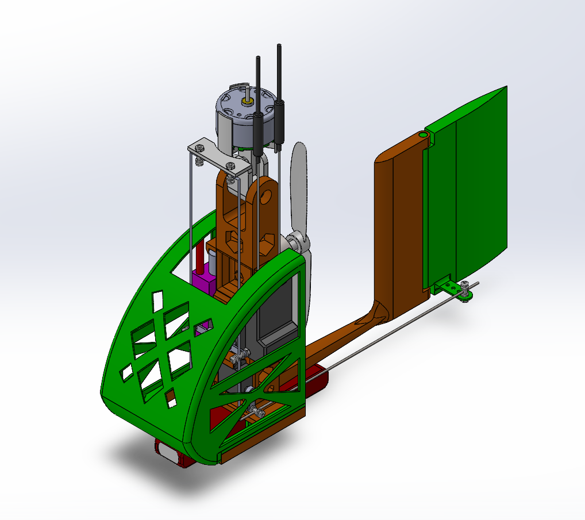
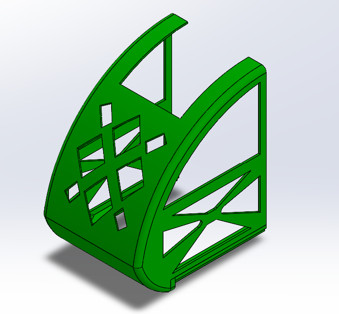

Senior Design Capstone: Autogyro
This project focused on the design and development of a 3D-printed autogyro. My work included creating detailed CAD models in SolidWorks, improving component geometry, and helping reduce total component weight through design and print optimization.
1. Initial Design
The project began with the first autogyro concept, which established the general layout of the fuselage, canopy, and rotor-related components. At this stage, the focus was on creating a workable starting point that could be manufactured and tested.


2. Challenges and Areas for Improvement
After evaluating the early design, several opportunities for improvement became clear. The design needed to be lighter, more refined, and better suited for fabrication and overall system integration. This stage helped guide the next design decisions.



3. Design Iterations
From there, I worked on improving the CAD geometry of major components such as the canopy, fuselage, and airfoil-related features. These iterations focused on reducing unnecessary weight, improving part efficiency, and supporting a more practical final build.

4. Final Outcome
The final design reflected a much more optimized version of the autogyro. Through design refinement, print setting adjustments, and material selection, the project achieved a 32% reduction in total component weight. The finished result better balanced design, manufacturability, and performance goals.

5. Key Takeaways
This project strengthened my experience in SolidWorks, design iteration, and technical communication. It also showed me the importance of balancing performance goals with practical manufacturing decisions throughout the design process.